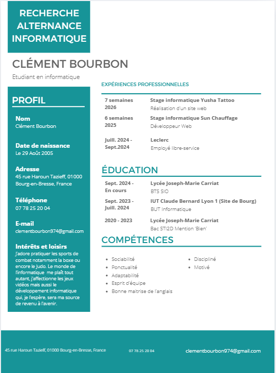

À propos de moi
Passionné par le développement web et les nouvelles technologies, je suis actuellement étudiant en BTS SIO. Je conçois des sites web modernes, performants et adaptés aux besoins des utilisateurs. Curieux et motivé, je cherche constamment à améliorer mes compétences en explorant de nouveaux langages et frameworks.
Parcours Scolaire
Diplôme : Baccalauréat Sciences et Technologies de l'Industrie et du Développement Durable
Spécialité : Systèmes d'Information et Numérique (SIN)
Bachelor universitaire de technologie en Informatique
IUT Lyon 1 - Première année du cursus
Brevet de Technicien Supérieur Services Informatiques aux Organisations
Option : Solutions Logicielles et Applications Métier (SLAM)
Expérience Professionnelle
Travail polyvalent en cuisine et accueil client.
Gestion des rayons et service en magasin.
Développement web et création de solutions numériques.
Développement web et solutions informatiques.
Mes projets
Veille Technologique - React
📋 Méthodologie de Veille
Définition : La veille technologique est un processus continu de recherche, de sélection et d'analyse d'informations sur les évolutions technologiques pour rester à jour dans son domaine.
Type de veille pratiquée : ACTIVE
Veille ACTIVE : Démarche volontaire et organisée où je recherche intentionnellement des informations techniques, je consulte régulièrement les sources, j'analyse les annonces et je documente mes apprentissages.
Objectifs (selon programme BTS SIO) :
- Maintenir et actualiser les connaissances en développement web
- Anticiper les changements technologiques et adapter mes compétences
- Optimiser les choix technologiques pour mon stage et mes projets
- Préparer mon entrée dans le monde professionnel
Processus suivi (approche structurée) :
- Recherche Active : Consultation volontaire et régulière de sources fiables (newsletters, documentation officielle)
- Tri : Sélection critique des informations pertinentes et vérifiées
- Analyse : Évaluation de l'impact sur mon formation et mes projets
- Synthèse : Documentation structurée et partage (comme ici sur mon portfolio)
- Application : Mise en pratique des apprentissages dans mes projets
🔗 Sources de Veille Utilisées
Sources consultées activement (approche ACTIVE) :
- Documentation officielle : react.dev (guides et API React) - consultation hebdomadaire
- Blog officiel : blog.react.dev (annonces majeures) - suivi mensuel
- Newsletter : React Status, JavaScript Weekly - inscription et lecture régulière
- Plateforme de code : GitHub React (discussions, issues, releases) - consultation active
- Communauté : Stack Overflow, Reddit r/reactjs - recherche d'expériences
- Conférences : React Conference, JS conferences (vidéos YouTube) - visionnage ciblé
- Articles techniques : Medium, Dev.to, Smashing Magazine - lecture active des trending articles
✓ Toutes ces sources sont consultées de manière intentionnelle et régulière dans le cadre de ma formation BTS SIO
🚀 Découvertes Clés - React 2025/2026
React 19 & Server Components
Les Server Components deviennent un standard pour optimiser le rendu côté serveur et réduire le JavaScript client. Framework comme Next.js intègrent cette approche nativement.
Impact : ÉLEVÉHooks Avancements et use() API
Nouvelles fonctions comme use() simplifient la gestion des Promises et du contexte. Les hooks deviennent encore plus puissants et expressifs.
Impact : MOYEN-ÉLEVÉActions & Mutations Simplifiées
Avec React 19, les Server Actions rendent les mutations et les appels serveur plus simples, réduisant le code boilerplate pour les formulaires.
Impact : ÉLEVÉPerformance Optimizations
Amélioration continue des algorithmes de réconciliation et de rendering. Focus sur Core Web Vitals et UX performante.
Impact : MOYENTypeScript par Défaut
Le TypeScript devient de plus en plus central dans l'écosystème React. Meilleure intégration avec les outils et les frameworks.
Impact : MOYEN-ÉLEVÉ💡 Tendances Identifiées & Adaptation Personnelle
Tendances identifiées via ma veille active :
- Shift vers le "React without JS" - moins d'hydratation client
- Croissance de l'écosystème meta (Next.js, React Native, etc.)
- Importance croissante de l'accessibilité (A11Y) et des performances
- Consolidation autour de quelques frameworks majeurs
- AI & React : intégration croissante de LLMs dans les applications
Adaptations dans mon parcours de formation BTS SIO :
- ✅ Prioriser Next.js dans mes futurs projets d'apprentissage
- ✅ Approfondir les hooks avancés et Context API
- ✅ Intégrer les Server Components dans mes prochains développements
- ✅ Mettre l'accent sur les performances et Core Web Vitals
- ✅ Explorer TypeScript pour mon stage chez Yusha Tattoo (Mars 2026)
📊 Calendrier de Veille Active & Suivi
Fréquence de consultation (approche actuelle en tant qu'étudiant BTS) :
- Quotidienne : Vérification des issues GitHub React (10-15 min)
- Hebdomadaire : Lecture React Status newsletter + articles Dev.to (30-45 min)
- Mensuelle : Relecture blog officiel React + exploration nouvelles versions (1-2h)
- Trimestrielle : Consultation des RFCs importantes + évaluation nouveaux outils (2-3h)
Pourquoi cette veille est importante pour mon cursus :
- Enrichissement personnel au-delà du programme officiel BTS
- Préparation efficace aux évaluations pratiques et projets
- Avantage concurrentiel pour mon stage en entreprise (Yusha Tattoo 2026)
- Compétence clé du domaine de l'informatique : "S'adapter rapidement"
Prochaines actions : Appliquer React 19 & Next.js 15+ dans mon stage et mes projets de fin de formation.
Mon CV

Contact
Email : clementbourbon974@gmail.com
LinkedIn : Mon profil